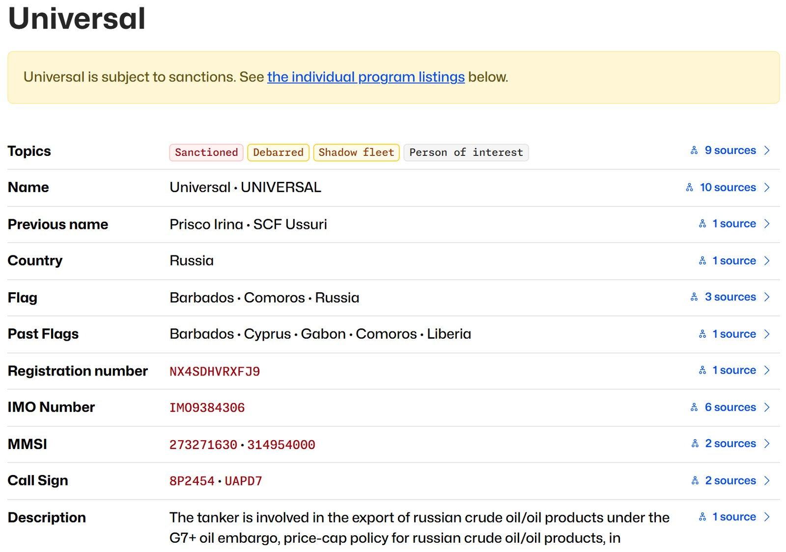
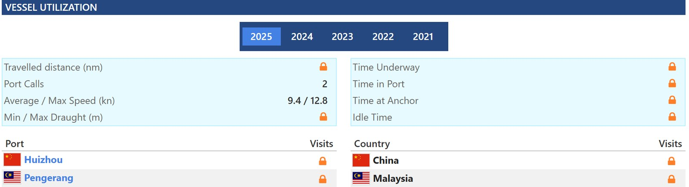
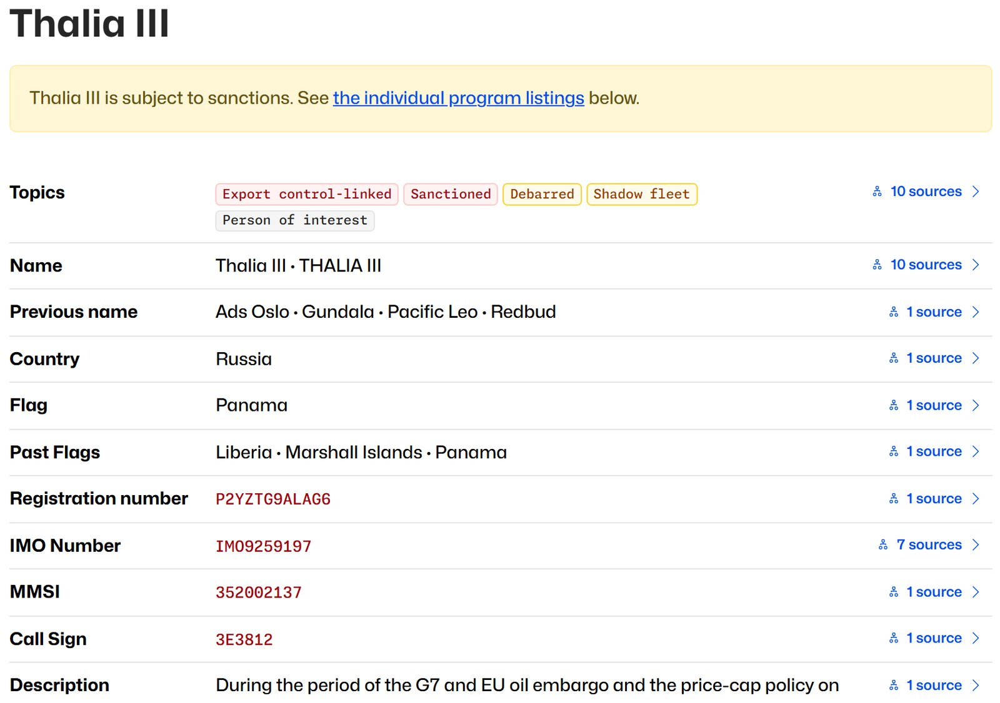
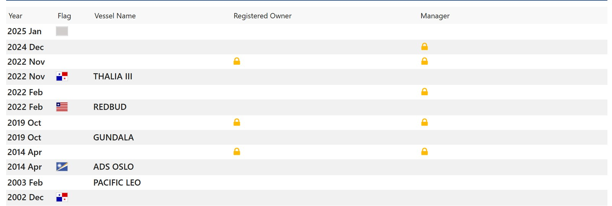

I was given three IMO numbers: 9384306, 9236248 and 9259197. The task was to find out what these ships are called now, what they were called before, who owns and runs them, whether they are sanctioned, and whether their AIS data looks normal.
I only used passive methods. I did not contact anyone, did not pay for any data, and did not try to get past sites that blocked me. The Ukrainian GUR site showed a bot check, so I used OpenSanctions instead, which republishes the same data. All screenshots were taken on 26 Nov 2026.
For each ship I also wrote down the innocent explanations, because an AIS gap on its own does not prove anything.
Confidence levels
High
Several independent sources agree and nothing points the other way.
Moderate
Well supported, but it depends on one main source or a paywalled field.
Low
A single unverified source. Treated as a lead only.
Sources and tools
Source
Used for
Limit
OpenSanctions
Sanctions listings, old names, flags, MMSIs
Aggregator, dates cross-checked
VesselFinder (free)
Live AIS, destination, draught, history
Owner/manager paywalled
MagicPort
Owner and ISM manager, port calls
Self-reported data
Copernicus Browser
Sentinel-2 satellite images
10 m pixels, size only
OFAC, UK FCDO, EU, Canada
Designation dates
Rarely name managers
News reports
Escorts, dark voyages, Venezuela
Treated as reporting
The three ships at a glance
UNIVERSALProduct tanker · 2009
Ex SCF USSURI (Sovcomflot)
Russian flag, North Fleet Ltd
Sanctioned by 6 countries
No AIS for 43 days
FENGHUANGCrude tanker · 2002
Ex MINERVA ZENIA, PHOENIX I
Renamed a month after US sanction
Three flags at the same time
Iranian oil to China
THALIA IIICrude tanker · 2003
Ex PACIFIC LEO, REDBUD
Flag "Unknown" since Jan 2025
Russia, Iran and Venezuela trade
Went dark leaving Venezuela
Sanctions dates
Authority
UNIVERSAL
FENGHUANG
THALIA III
United States
10 Jan 2025
24 Feb 2025
10 Jan 2025
European Union
20 May 2025
19 Dec 2025
21 May 2025
Switzerland
3 Jun 2025
13 Jan 2026
3 Jun 2025
United Kingdom
21 Jul 2025
24 Feb 2026
21 Jul 2025
Ukraine
13 Dec 2025
13 Dec 2025
13 Dec 2025
Canada
25 Mar 2026
–
Nov 2025
New Zealand
–
–
30 Oct 2025
From OpenSanctions, 26 Nov 2026. A dash means I did not find a listing.
The three ships do not share an owner or manager, so I would not call them one network. They do follow the same path though. Each was a normal tanker for most of its life. It was sold when old, renamed, moved to a weak flag, and then started carrying sanctioned oil.
UNIVERSAL
Product tanker · built 2009 · 183 m × 32 m · 50,923 dwt
IMO9384306MMSI 273271630
Assessment High confidence
UNIVERSAL is the old Sovcomflot tanker SCF USSURI. It got a neutral name in September 2024 and is now back on the Russian flag, owned and managed by North Fleet Ltd. Six countries have sanctioned it for carrying Russian oil, and Ukraine has also sanctioned its master. Its recent calls were Ust-Luga, Suez, Port Said and Manaus in Brazil. Its last AIS signal was 43 days ago off northern Russia, heading for Ust-Luga. I rate this high because the IMO, old names and MMSIs match across every source I checked. Its current activity is only moderate, since all I could see was an old terrestrial AIS fix.
"North Russia", 43 days ago, 13.9 kn, draught 8.2 m, to Ust-Luga
Last port
Manaus, Brazil, left 1 Jul 2026
Identity timeline
Mar 2009
Built as PRISCO IRINA
Aug 2016
Renamed SCF USSURI (the photo still shows this name on the bow)
Sep 2024
Renamed UNIVERSAL, moved to open registries, UAE managers
10 Jan 2025
US sanctions sanction
20 May 2025
EU sanctions sanction
3 Jun 2025
Switzerland follows the EU sanction
21 Jul 2025
UK sanctions (RUS2892) sanction
Aug 2025
Ukraine sanctions the master
2025
Press reports a Russian navy escort in the English Channel
13 Dec 2025
Ukraine sanctions the ship sanction
25 Mar 2026
Canada sanctions sanction
1 Jul 2026
Leaves Manaus, Brazil
~14 Oct 2026
Last AIS signal, northern Russia gap
AIS and behaviour log
What I saw
Why it matters
Weight
Two MMSIs, Barbados then Russia
Normal after a reflag, but it came after four other flags in two years
Medium
GUR says it exported from the Baltic with AIS off
A direct claim of switching off AIS
High
No AIS for 43 days, voyage still active
Long gap. Could be poor Arctic coverage or AIS off
Medium
Draught 8.2 m
Nearly empty, so it is going to Ust-Luga to load
Context
Last port Manaus, 148 days ago
An unusual port for this ship, and a long time unaccounted for
Medium
2025 calls at Kakinada and Chennai
Baltic to India is the usual Russian oil route
Medium
Evidence

Fig 1.1 · OpenSanctions: old names, flags, both MMSIs, tagged "Shadow fleet".Fig 1.2 · VesselFinder: Russian flag, heading to Ust-Luga, last seen 43 days ago, last port Manaus.Fig 1.3 · 2025 port calls, both in India.
Satellite image
Fig 1.4 · Ust-Luga berths, Sentinel-2, 22 Oct 2026. I measured the ships at about 245 m, 255 m and 150 m. None is 183 m, so UNIVERSAL is probably not in this image. The November images were too cloudy to check its arrival.
Link chart
VesselIMO 9384306UNIVERSAL
→
OwnerNorth Fleet LtdRussia
→
ManagerNorth Fleet LtdISM + commercial
→
JurisdictionRussiaflag + owner
→
Sanctions6 countriesUS EU CH UK UA CA
Earlier UAE managers linked by GUR to PJSC Sovcomflot (itself sanctioned)
Route: Baltic → Suez → India, plus one Brazil trip
Innocent explanations
The AIS gap is just poor coverage. Possible, since free AIS is weak in the Arctic. But it does not explain GUR's finding of AIS switched off in the Baltic, which is very well covered. Partly
Moving to the Russian flag is legal. True. Sanctioned ships lose their flags, so going home is normal. But the 2024 rebrand happened before any sanction. Partly
The Brazil trip was normal trade. Brazil does buy Russian diesel. Together with the navy escort and the long gap, it looks less normal. Weak
FENGHUANG
Crude tanker · built 2002 · 248 m × 43 m · 105,851 dwt
IMO9236248AIS MMSI 650000127
Assessment High confidence
FENGHUANG sailed for 18 years as MINERVA ZENIA in a normal Greek fleet. Today it carries Iranian oil. The US sanctioned it on 24 Feb 2025 as property of Alkonost Maritime DMCC in Dubai, and about a month later it was renamed. Ukraine, the EU, Switzerland and the UK added it later. Its paperwork does not agree. AIS shows a Mozambique MMSI, OpenSanctions says Cook Islands and VesselFinder says Comoros. It is now loaded, with no destination, near Malaysia. I rate this high. The real owner is only moderate, because that field is paywalled.
MINERVA ZENIA → BURGUNDY STAR → PHOENIX I → FENGHUANG
Past flags
Greece, Malta, Liberia, Panama, Cook Islands
MMSIs
518999317 (Cook Islands) and 650000127 (Mozambique, live)
Linked company
Alkonost Maritime DMCC, Dubai (US sanctioned)
Oil chain
Naftiran Intertrade (Iran) → Petronix Energy Trading (HK) → China
Last AIS
South East Asia, 9 days ago, 6.8 kn, draught 12.8 m, "FOR ORDER"
2025 ports
Huizhou (China), Pengerang (Malaysia)
Identity timeline
Apr 2002
Built as MINERVA ZENIA
Aug 2020
Sold and renamed BURGUNDY STAR
Oct 2020
Renamed again two months later: PHOENIX I
Apr 2021
Listed by UANI as carrying Iranian oil
2022–2024
Iranian oil to China, a Venezuela link, a Nakhodka call
24 Feb 2025
US sanctions (Alkonost property) sanction
Mar 2025
Renamed FENGHUANGrename
13 Dec 2025
Ukraine sanctions sanction
19 Dec 2025
EU sanctions sanction
13 Jan 2026
Switzerland sanctions sanction
24 Feb 2026
UK sanctions (RUS3384) sanction
Nov 2026
Loaded near Malaysia, AIS flag Mozambique mismatch
AIS and behaviour log
What I saw
Why it matters
Weight
MMSI 650… means Mozambique
Doesn't match the other two flags. I found no Mozambique registration
High
MMSI is a very round number (650000127)
Made-up MMSIs often look like this
Medium
Renamed one month after US sanction
A common way to dodge name-based screening
High
Loaded, "FOR ORDER", 6.8 kn off Malaysia
Looks like waiting for a ship-to-ship transfer
Medium
No AIS for 9 days
Coverage is good there, but it may be offshore
Low
Calls at Pengerang and Huizhou
Pengerang is next to a known STS area for Iranian oil
Medium
Evidence
Fig 2.1 · OpenSanctions: old names, Cook Islands flag, MMSI 518999317. The text names Petronix, Naftiran and Alkonost.Fig 2.2 · VesselFinder: Mozambique AIS flag, MMSI 650000127, "FOR ORDER", draught 12.8 m. The photo still shows "Minerva" on the hull.

Fig 2.3 · 2025 port calls: Huizhou and Pengerang.
Satellite image
Fig 2.4 · Pengerang jetties, Sentinel-2, 22 Aug 2026. Ships A (~250 m) and B (~240 m) are the same size as FENGHUANG (248 m). That is only a size match. I can't say either one is FENGHUANG.
Link chart
VesselIMO 9236248FENGHUANG
→
OwnerNot publicAlkonost has an interest
→
ManagerAlkonost MaritimeDubai, UAE
→
JurisdictionUnclearMZ / CK / KM
→
Sanctions5 countriesUS UA EU CH UK
Oil from Naftiran Intertrade (Iran), sold via Petronix Energy Trading (Hong Kong)
Delivered to China through Malaysian STS areas and Huizhou
Innocent explanations
The flag mix-up is just slow databases. This could explain two sources disagreeing, but not three. Partly
"FOR ORDER" is normal. Many ships wait for orders. But this one is sanctioned, loaded and waiting near STS areas. Partly
The renames were ordinary sales. The 2020 sale looks normal. The 2025 rename, weeks after the US sanction, does not. Weak
THALIA III
Crude tanker · built 2003 · 247 m × 42 m · 107,127 dwt
IMO9259197MMSI 352002137
Assessment High confidence
THALIA III was built as PACIFIC LEO and has had five names. It has carried Russian, Iranian and Venezuelan oil. In early January 2026 it tried to leave Venezuela with its AIS off to get past the US blockade. It turned back after the US detained OLINA on 9 January. VesselFinder has shown its flag as "Unknown" since January 2025, the month the US sanctioned it, which suggests Panama dropped it. Seven countries have sanctioned the ship and Ukraine has sanctioned its master. I rate this high. The owner is moderate: one report names Selena Lively Ltd, but I couldn't confirm it.
Key facts
Flag
Panama on record, "Unknown" on AIS since Jan 2025
Old names
PACIFIC LEO → ADS OSLO → GUNDALA → REDBUD → THALIA III
Past flags
Panama, Marshall Islands, Liberia
MMSI / call sign
352002137 / 3E3812 (Panama)
Reported owner
Selena Lively Ltd (not confirmed)
2024 activity
17 port calls incl. Kozmino (Russia) and Sungai Linggi (Malaysia)
Oil carried
Russia, Iran, Venezuela (PDVSA)
Identity timeline
Feb 2003
Built as PACIFIC LEO, Panama flag
Apr 2014
Renamed ADS OSLO, Marshall Islands
Oct 2019
Renamed GUNDALA, new owner
Feb 2022
Renamed REDBUD, Liberia
Nov 2022
Renamed THALIA III, back to Panama, just before the price cap
2024
17 port calls incl. Kozmino and Sungai Linggi
10 Jan 2025
US sanctions, flag goes "Unknown" sanction
21 May 2025
EU sanctions sanction
3 Jun 2025
Switzerland sanctions sanction
21 Jul 2025
UK sanctions sanction
30 Oct 2025
New Zealand, then Canada in Nov sanction
13 Dec 2025
Ukraine sanctions the ship sanction
Early Jan 2026
Tries to leave Venezuela with AIS off dark
After 9 Jan 2026
Turns back after OLINA is detained, loads PDVSA oil
21 Feb 2026
Ukraine sanctions the master
AIS and behaviour log
What I saw
Why it matters
Weight
AIS off while leaving Venezuela, Jan 2026
The clearest dark activity of the three ships
High
Flag "Unknown" but still using a Panama MMSI
The ship is likely stateless
High
Five names, three flags
Changes sped up as the ship got older
Medium
Kozmino and Sungai Linggi in one year
Russian crude plus a known STS area
Medium
One source says it also used the name "SKYLYN"
Only one source, so I treat it as a lead
Low
Evidence

Fig 3.1 · OpenSanctions: tagged "Sanctioned" and "Shadow fleet", old names, Panama MMSI.Fig 3.2 · VesselFinder: "flag of Unknown", sanctioned by the EU, UK and US.
Fig 3.3 · 2024: 17 calls incl. Kozmino.

Fig 3.4 · Name and flag history.
Satellite image
Fig 3.5 · Off José terminal, Venezuela, Sentinel-2, 8 Jan 2026, the day before OLINA was detained. One ship is moving (A), one is at the offshore mooring (B), and two are waiting (C). At this resolution I can't identify them, but tankers were clearly moving during the blockade.
Link chart
VesselIMO 9259197THALIA III
→
OwnerSelena Lively Ltdreported
→
ManagerNot publicchanged 2022, 2024
→
JurisdictionStateless?Panama dropped it
→
Sanctions7 countriesUS EU CH UK NZ CA UA
Russian crude from the Baltic, Black Sea and Kozmino to China and India
Venezuela, Jan 2026, alongside OLINA (detained), MIN HANG and MEROPE
Innocent explanations
"Unknown" flag is a database delay. Not for almost two years, and it started the same month as the US sanction. Weak
Loading in Venezuela was licensed. Licences cover named companies, not a sanctioned ship trying to leave with AIS off. Weak
The Malaysia calls were for fuel or crew. Possible for any single call, but less likely next to the Kozmino trips. Partly
Limits and next steps
Ownership. For all three ships the owner and manager fields are paywalled, so some names stay unconfirmed. I left out anything I couldn't check.
Satellite images. Sentinel-2 can tell a 180 m ship from a 250 m one, but it can't name the ship.
AIS. I only had free terrestrial AIS, so some of these gaps may just be coverage.
If I had more time: a free Equasis account for manager history, Sentinel-1 radar (it sees through cloud) for Ust-Luga in late November, Global Fishing Watch for AIS gaps, and company registry searches.
Sources (accessed 26 Nov 2026)
OpenSanctions entity pages for Universal, FENGHUANG and Thalia III, opensanctions.org/entities/
US Treasury OFAC press releases, 10 Jan 2025 and 24 Feb 2025; OFAC Sanctions List Search
UK Sanctions List, RUS2892 and RUS3384
EU Regulation 833/2014 ship listings, EUR-Lex
Swiss SECO, Canada Gazette, New Zealand Russia Sanctions Register
Ukraine GUR War & Sanctions data, via OpenSanctions
Copernicus Browser, Sentinel-2 L2A: 22 Oct 2026, 22 Aug 2026, 8 Jan 2026
The Maritime Executive and The Insider (navy escort); vesseltracker.com (Cuba voyage)
UANI tanker tracker
News on the Venezuela blockade and the OLINA detention, Jan 2026
I confirm this is my own work, done with passive open-source methods only. No one was contacted, no access controls were bypassed, and no paid data was used.
Manishkumar Yadav · 250104002031 · MBA Cyber Security Management, Sem 3 · NFSU Gandhinagar